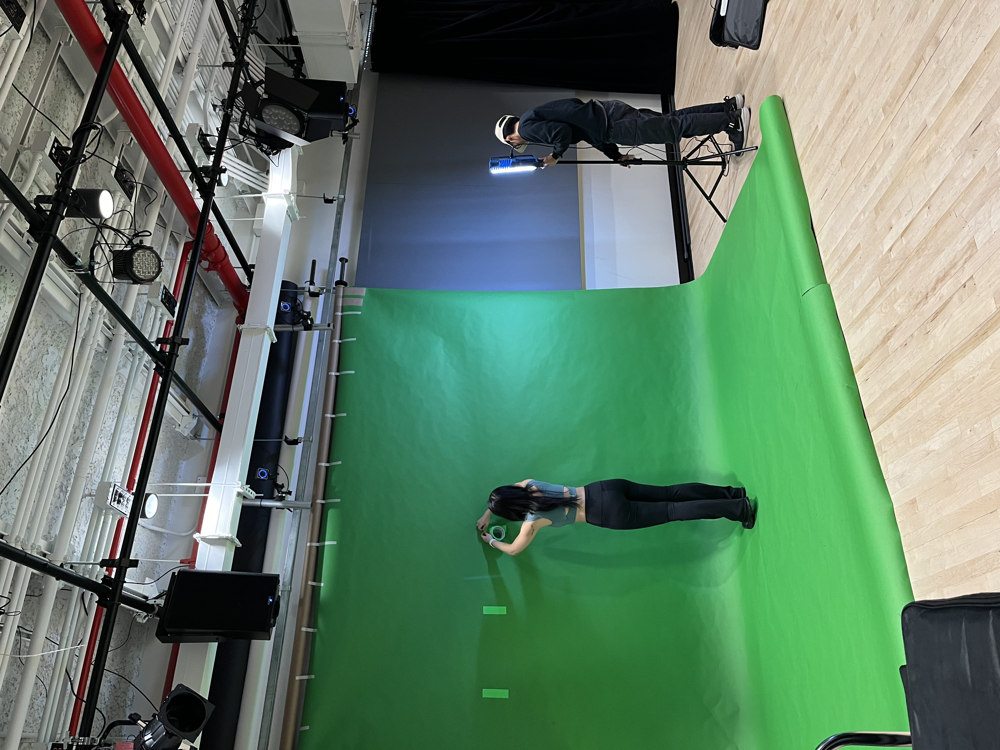
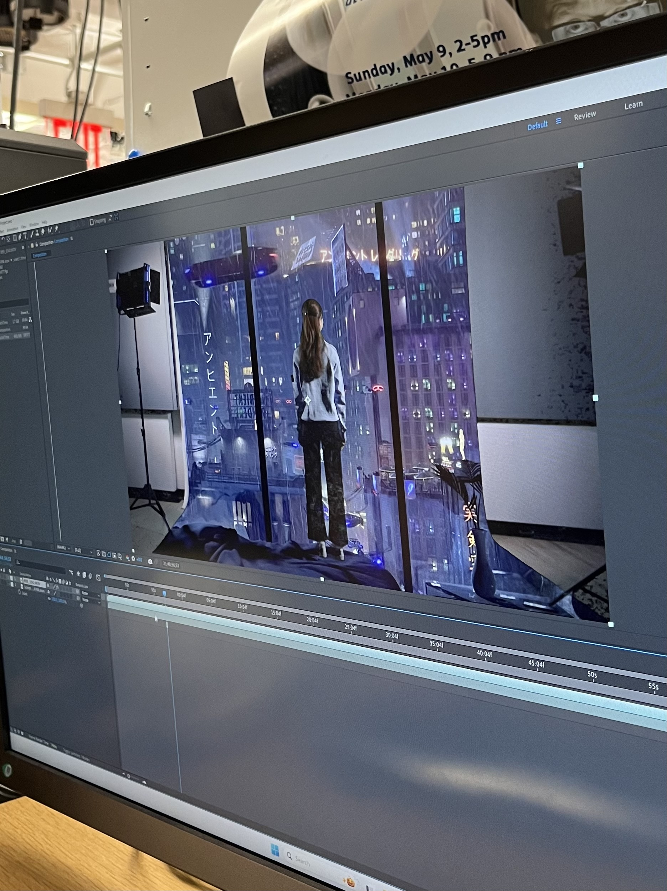

A Speculative Future Film
Inspiration
Drawing from dystopian and cyberpunk influences, particularly Blade Runner, this film envisions a futuristic world where humanity has vanished, leaving behind a landscape of overgrown cities and decaying brutalist architecture. The cityscapes are defined by towering structures, neon lights, and dark, rain-soaked streets, contrasting with the cold, mechanical presence of cyborgs. Set in a futuristic apartment, the film explores existential questions about reality and illusion in an over-stimulating, high-tech world.
The Process
- Ideating & Planning —
- Developed the film’s narrative, visual style, and storyboard, focusing on a dystopian, cyberpunk aesthetic with Figma.

- Filming & Footage Preparation —
- Shot green screen footage with careful attention to actor positioning and scene setup.


- Visual Effects & Editing —
- Experimented with After Effects to design visual effects and incorporate AI-generated footage from RunwayML by providing the software with relevant images.
- Refined key elements such as color correction, positioning, and shadowing for a seamless final look.


- Audio Design & Finalization —
- Designed and integrated sound effects using Premiere Pro to enhance the futuristic and glitchy atmosphere of the film.
- Completed the project with collaborative feedback, final edits, and audio integration.
Tools & Frameworks
- Implemented using RunwayML for AI-generated footage and visuals
- Leverages After Effects for visual effects and post-production refinement
- Utilizes Premiere Pro for audio design and final audio mix
Detailed weekly documentation can be found on my NYU blog here, here, here, and here!
WHEN WAS THIS?
Nov 2024 (3 weeks)
WHAT'D I DO?
In this three-person project with Queenie Hsiao and Chris Toh, I provided support in both the technical execution and creative aspects.
My responsibilities include:
- Content Sourcing & Integration — Sourced AI-generated footage and sand dune visuals using RunwayML to integrate into the film, ensuring continuity while working remotely.
- Visual Effects & Post-Production — Assisted in applying After Effects to test and refine key visual effects, including screen glitches, fractal noise, and color adjustments to enhance the overall aesthetic.
- Collaborative Problem-Solving & Technical Support — Contributed to collaborative problem-solving during technical issues, providing input on video editing techniques and collaborating with the team on final visual compositions.
- Audio Design & Optimization — Worked on sound design by sourcing and creating sound effects, addressing challenges like finding the right audio and contributing to the final audio mix for the project using Premiere Pro.